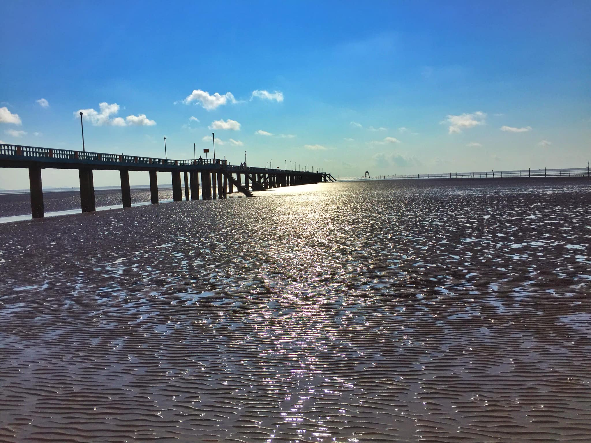
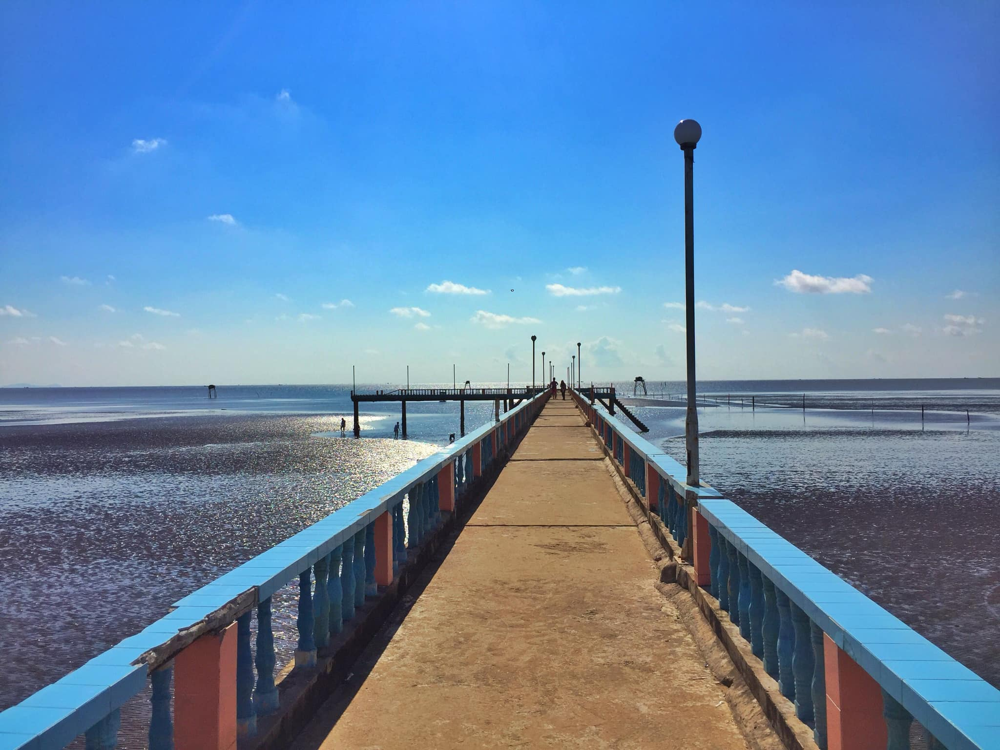
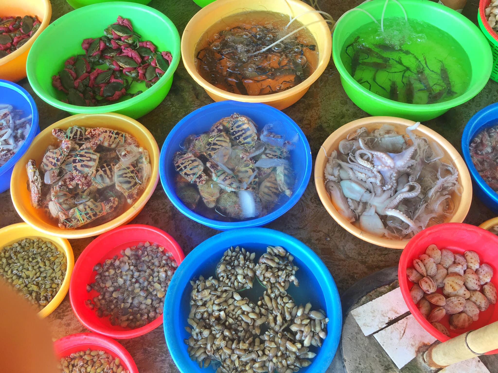
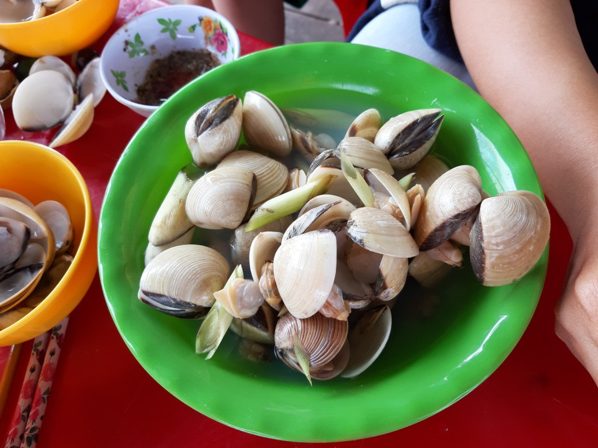
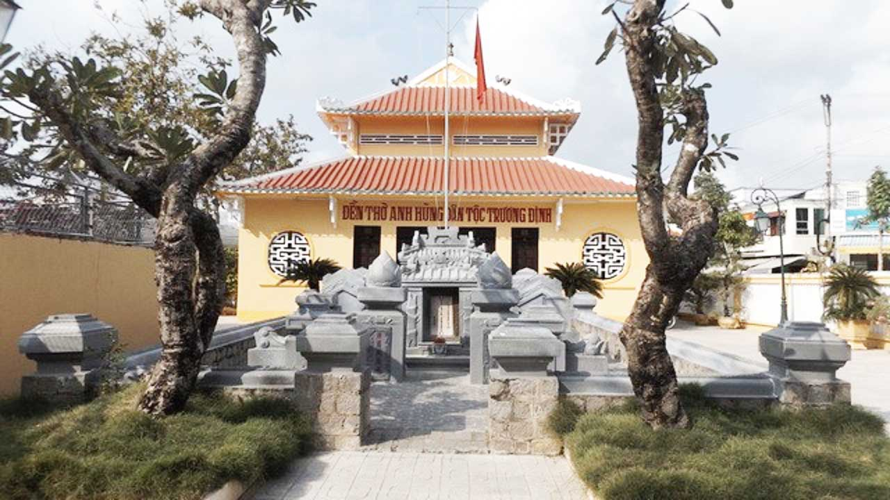

Biển Tân Thành nằm ở đâu?
Biển Tân Thành hay còn gọi là bãi biển Gò Công nằm ở xã Tân Thành huyện Gò Công, tỉnh Tiền Giang, cách trung tâm TP Mỹ Tho 50 km, cách TP. Hồ Chí Minh khoảng 70km theo Quốc lộ 50. Bãi biển này kéo dài khoảng 7 km, sở hữu những triền cát đen trải dài thực sự ấn tượng. Nói không ngoa khi nơi đây là một trong những bãi biển cát đen thú vị nhất Việt Nam.


Nếu đến đây vào sáng sớm, bạn có thể đi trên chiếc cầu tàu dài hơn 300m dẫn ra biển, rất hữu tình để ngắm bình minh nhô dần trên mặt biển.
Dạo bước trên cây cầu nhỏ, khách du lịch sẽ được chứng kiến tận mắt hoạt động đánh cá của những ngư dân chài lưới. Ngắm nhìn những người dân cần mẫn lao động trên nền biển mênh mông.
Ăn gì ở biển Tân Thành? Thưởng thức hải sản tươi ngon
Ngoài tắm biển phù sa, thì điểm hấp dẫn nhất ở đây chính là các món đặc sản vùng biển. Biển Gò Công nổi tiếng với con nghêu, sam, móng tay, sò huyết và các loại tôm, ốc… được chế biến thành những món đơn giản mà thơm ngon.


Vùng biển Gò Công ít sóng gió, đáy cát pha bùn, nhiều thức ăn, nên thích hợp cho loài nghêu trú ngụ. Thịt nghêu xứ này ngon ngọt lại thơm, dần nổi tiếng và được tiêu thụ nhiều. Từ đó, nghề nuôi nghêu mới ra đời, và trở thành một trong những vùng nuôi nghêu lớn nhất miền Tây Nam Bộ. Đặc biệt, người dân ở đây rất có kinh nghiệm trong việc canh nước để khi thu hoạch, nghêu không bị ngậm cát.
Tham quan những địa điểm nổi tiếng gần bãi biển Tân Thành
Từ khu du lịch biển Tân Thành du khách có thể đi đến tham quan các điểm du lịch, di tích lịch sử – văn hóa như: di tích đền thờ anh hùng dân tộc Trương Định, lăng Hoàng Gia, nhà Đốc phủ Hải, tham quan làng nghề truyền thống tủ thờ Gò Công, mắm tôm chà, vườn sơ ri, du khách sẽ cảm nhận sự thanh bình của thiên nhiên và tình cảm chân chất của con người xứ biển Gò Công.
